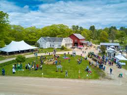

At Cedar Hollow Organics, we believe learning happens best with your hands in the soil. Our events and workshops are designed to connect the community with sustainable agriculture through fun, educational, and memorable experiences for all ages.

- 🌻 Spring Planting Workshop — Learn soil preparation, seed starting, and organic growing basics.
- 🍓 Summer Harvest Festival — Celebrate the season with tastings, farm tours, and family activities.
- 🍂 Autumn Organic Cooking Class — Discover recipes that highlight the season’s freshest produce.